The subsidy simulation package of AURA
SUBSIM simulates the effects of a reform of prices and subsidies. On a household survey, it measures how a change in the prices of subsidized goods — energy, food, water, electricity — changes the well-being of households, the quantities they consume, government revenue, poverty and inequality, and which cash transfer would offset the rise of poverty. With an input-output table, it adds the indirect effects: the change in the price of an intermediate good (fuel, electricity) moves the prices of all the goods produced with it, and the households feel it through their whole consumption.
The model was designed by Abdelkrim Araar and Paolo Verme for the World Bank (Araar and Verme 2012), as a toolkit for rapid distributional analyses of subsidy reforms. This manual describes the SUBSIM package of AURA: what it computes, exactly how it computes it, and how to use it.
A simulation starts from a household survey that records, for each household, its total expenditure per person and its expenditure on each good concerned by the reform — an item. For each item, the user gives:
SUBSIM turns each household’s expenditure into the quantity it buys, prices that quantity before and after the reform, and reports by group of households (by default the quintiles of expenditure per person):
| Result | What it measures |
|---|---|
| Expenditures and quantities | who consumes the items, and how much |
| Benefits of the subsidies | who receives the subsidies, in money and as a share of their budget |
| Impact on well-being | the money-metric loss (or gain) of the households, per person and in % |
| Impact on quantities | how much less (or more) of each item is bought |
| Impact on government revenue | the fall of the subsidy bill |
| Poverty and inequality | the poverty headcount, the poverty gap and the Gini index, before and after |
| Compensating transfer | the cash transfer that brings poverty back to its level before the reform |
The results are tables (twenty-two of them, plus the main results) and ten graphs. The direct effect of a reform is the effect of the items’ own prices on the households that buy them. The indirect effect is the effect of the other prices that move because the items are inputs of other goods; SUBSIM computes it with an input-output price model and consumption aggregates that match the sectors of the table (Chapter 5).
SUBSIM is a package of AURA. It adds four commands and their dialog boxes, under Statistics ▸ SUBSIM:
| Command | Menu entry | Purpose |
|---|---|---|
pschset |
Initialise the price schedule | declares a price schedule (blocks, tariffs, subsidies, structure) |
pschdes |
Describe the price schedule | describes one or several schedules, in a table and a graph |
subsim |
Automated simulator: direct and indirect effects | the simulation |
pciom |
Input-output models and sectoral price changes | the price changes of the sectors of an input-output table |
AURA brings to SUBSIM what it brings to every analysis:
svyset declares the sampling weight, the strata and the
primary sampling units; SUBSIM reads them, weights its statistics and
gives design-based standard errors for the changes of poverty and
inequality.help subsim,
help pschset, help pschdes and
help pciom describe the syntax and give numbered examples
that run on the example data, in the command window or in the dialog
box, filled. help subsim_tables and
help subsim_graphs list the tables and graphs with their
codes..aurg file (the
graph and its data) and copied to Word as a vector picture.Chapter 2 runs a first simulation from start to end. Chapter 3
explains the price schedules, Chapter 4 the theory of the direct effect
and the rules AURA applies, Chapter 5 the indirect effect. Chapter 6 is
the reference of the subsim command (options, tables,
graphs, stored results), Chapter 7 the dialog boxes, and Chapter 8 a set
of worked examples. Chapter 9 is for the users of SUBSIM in Stata: it
says where AURA reports more precise estimates.
Equations use the notation of §4.1. Every number quoted in this
manual comes from the example data shipped with AURA, and can be
reproduced with the commands shown (the figures are drawn by
tools/build_subsim_figures.py).
Three datasets come with AURA, in the folder of the help files
(data/); the examples of the help pages load them:
| Dataset | Content |
|---|---|
subsim_example.dta |
SUBSIM’s example: 2,000 households, their expenditure per person
(pc_exp_tot), the household size (hhsize), the
poverty line (pline), their expenditure per person on
eleven subsidized goods (pc_exp_flour,
pc_exp_sugar, …), and, in its first rows, the table of the
items (names, schedules, elasticities) |
egypt_sample.dta |
a sample of 1,848 households of Egypt’s household survey
(expenditure per person pcexp, size, poverty line, group
Urbrur), with, in its first rows, the table of 39
consumption aggregates (their expenditure variables, names and matching
sectors) |
IOM_EGY2015.dta |
Egypt’s input-output table of 2015: 90 sectors (one variable each, labelled with the sector’s name) and 91 rows, the last being the value added |
The tables of items and of aggregates follow SUBSIM’s convention:
their variables are added at the top of the household
data, one row per item, with missing values below. The options
nitems() and initems() say how many rows to
read (§6.2, §5.3).
This chapter simulates a reform of the price of sugar, step by step: from the data to the main results, with commands and then with the dialog box.
. use "data/subsim_example.dta", clear
. svyset [pweight = hh_coef], strata(area)The survey design tells SUBSIM how to weight the households and how
to compute standard errors. The example data already carry their design
— a .dta file saved with its svyset keeps it,
and AURA reads it when the file is opened — so the second line is only
needed for data without one; svydes describes the design.
Without a design, the households have equal weights and the sample is
treated as a simple random sample. Every statistic of SUBSIM weights a
household by its sampling weight times its size: the results are about
persons.
Sugar costs 0.25 a kilogram; the government pays a subsidy of 1.068
on each kilogram; the reform raises the price to 0.5704, cutting the
subsidy by 30% (0.25 + 0.3 × 1.068 = 0.5704). The households’
expenditure per person on sugar is the variable
pc_exp_sugar, and the own-price elasticity is taken at
−0.5:
. subsim pc_exp_tot, hsize(hhsize) pline(pline) ///
item1(Sugar, var(pc_exp_sugar) unit(kg) initial(.25) subsidy(1.068) final(.5704) elasticity(-.5)) ///
tjobs(42 43 46 47) summary gjobs(off)The first variable is the total expenditure per person — the living
standard. hsize() is the household size and
pline() the poverty line (a variable or a number). Each
item is an option item1(), item2(), …: its
name, then its expenditure variable, its unit, its initial price, its
unit subsidy, its final price and its elasticity. tjobs()
lists the tables to show (all of them by default), summary
adds the main results, and gjobs(off) draws no graph (all
of them are drawn by default).
The tables are given by group of households — here the quintiles of expenditure per person. Table 4.2 is the impact on well-being per person, in money; table 4.3 the same in % of expenditure:
Table 4.2: The impact on the per capita well-being (in currency) : Scenario 1
────────────┬─────────────────
Groups │ Sugar Total
────────────┼─────────────────
Quintile 1 │ -12.38 -12.38
Quintile 2 │ -17.18 -17.18
Quintile 3 │ -23.03 -23.03
Quintile 4 │ -27.94 -27.94
Quintile 5 │ -38.85 -38.85
────────────┼─────────────────
Total │ -23.87 -23.87
────────────┴─────────────────
Table 4.3: The impact on well-being (in %) : Scenario 1
────────────┬───────────────
Groups │ Sugar Total
────────────┼───────────────
Quintile 1 │ -1.32 -1.32
Quintile 2 │ -1.24 -1.24
Quintile 3 │ -1.30 -1.30
Quintile 4 │ -1.20 -1.20
Quintile 5 │ -1.00 -1.00
────────────┼───────────────
Total │ -1.16 -1.16
────────────┴───────────────Each household loses, per person, the extra cost of the sugar it bought before the reform. The richest quintile loses three times as much as the poorest in money — it buys more sugar — but the poorest loses more as a share of its budget (1.32% against 1.00%): the subsidy was worth more to the poor than to the rich, relative to their living standard. The government saves 38.6 million (table 4.6), and the poverty headcount rises by 0.37 points, a change whose standard error (0.17) says that it is significant (table 4.7). The main results gather the essentials:
Main results : Scenario 1
───────────────────────────────┬────────────────────────────────────
Component │ Pre-reform Post-reform Change
───────────────────────────────┼────────────────────────────────────
Well-being │
Welfare (per capita) │ 2062.099 2038.232 -23.868
Poverty headcount (%) │ 11.502 11.875 0.373
Poverty gap (%) │ 2.194 2.332 0.139
Inequality, Gini (%) │ 28.493 28.561 0.068
───────────────────────────────┼────────────────────────────────────
Budget │
Subsidies (in millions) │ 51.600 12.974 -38.626
Transfers (in millions) (*) │ 0.000 7.527 7.527
Total budget (in millions) │ 51.600 20.502 -31.098
───────────────────────────────┼────────────────────────────────────
Per capita │
Subsidy (per capita) │ 79.559 20.004 -59.554
Transfer (per capita) │ 0.000 11.606 11.606
Transfer (per beneficiary) │ 0.000 11.606 11.606
───────────────────────────────┴────────────────────────────────────
Subsidy per capita after the reform = before - revenue gain per capita.
(*) The transfer that brings the poverty headcount back to its level before the reform,
paid to each person.The reform cuts the subsidy bill from 51.6 to 13.0 million. A transfer of 11.61 to every person would bring the poverty headcount back to 11.50%, at a cost of 7.5 million: the budget still gains 31.1 million. The subsidy after the reform is not zero: the households still buy sugar below its cost (0.5704 against 0.25 + 1.068 = 1.318), and they buy less of it (the elasticity), so the bill falls by more than 30% — by 75%.
Statistics ▸ SUBSIM ▸ Automated simulator: direct and
indirect effects (or db subsim) opens the box of
Chapter 7. In the Main tab, give the expenditure per
person, the household size and the poverty line; in Direct
effect, one item, Linear, with its varname, initial
price, subsidy, final price and elasticity; in Table
options, the codes of the tables (or Select…
to check them in a list) and Produce the summary table.
OK runs the simulation and closes the box;
Submit runs it and keeps the box open. The command the
box writes appears in the Review panel. From help subsim,
the link run in dialog box under an example opens the box
filled with it.
A price is a number when every unit costs the same — a linear
price. Many subsidized goods are priced otherwise: electricity
and water by blocks of consumption, each with its own
tariff; flour or bread by a quota, a quantity sold at
the subsidized price and the rest at the market price. SUBSIM handles
all of them with price schedules, declared by
pschset and described by pschdes; a linear
price is the schedule of one block.
A schedule cuts the quantity into \(B\) blocks with upper bounds \(b_1 < b_2 < \dots < b_{B-1}\) (the last block is open: \(b_0 = 0\), \(b_B = \infty\)). Block \(b\) has a tariff \(p_b\) and, optionally, a unit subsidy \(s_b\) — what the government pays on each unit, so that the cost of a unit to the producer is \(p_b + s_b\). A quota of 36 kg of flour per person at 0.09, with a subsidy of 0.94, the market price 1.03 beyond, is the schedule of two blocks:
| Block | Tariff | Subsidy |
|---|---|---|
| 0 – 36 kg | 0.09 | 0.94 |
| 36 kg and more | 1.03 | 0 |
From an economic point of view the quota and the blocks are the same thing: a quota is a schedule of two blocks.
Two rules are common for the cost of a quantity:
Each block of a schedule can follow its own rule
(structure(ibt ibt vdt ibt)); IBT for all the blocks, VDT
for all the blocks and the mixed structure — IBT up to
a block, VDT beyond — are particular cases. The cost of a quantity
follows from one recursion. Let \(X_b\)
be the cost of the upper bound of block \(b\), by the block’s own rule:
\[X_0 = 0, \qquad X_b = \begin{cases} X_{b-1} + (b_b - b_{b-1})\, p_b & \text{block $b$ IBT} \\ b_b\, p_b & \text{block $b$ VDT.} \end{cases}\]
A quantity \(q\) in block \(b\) (\(b_{b-1} < q \le b_b\)) costs
\[C(q) = F + \begin{cases} X_{b-1} + (q - b_{b-1})\, p_b & \text{block $b$ IBT} \\ q\, p_b & \text{block $b$ VDT,} \end{cases}\]
where \(F\) is the subscription fee (§3.4). Below an IBT block, the units cost the accumulated tariffs of the IBT blocks, up to the last VDT block below, whose tariff prices every unit up to its upper bound. With bounds 100, 200 and 300, tariffs 1 to 4, and the structure IBT, IBT, VDT, IBT, a quantity of 350 costs \(X_3 + 50 \times 4 = 300 \times 3 + 200 = 1100\).
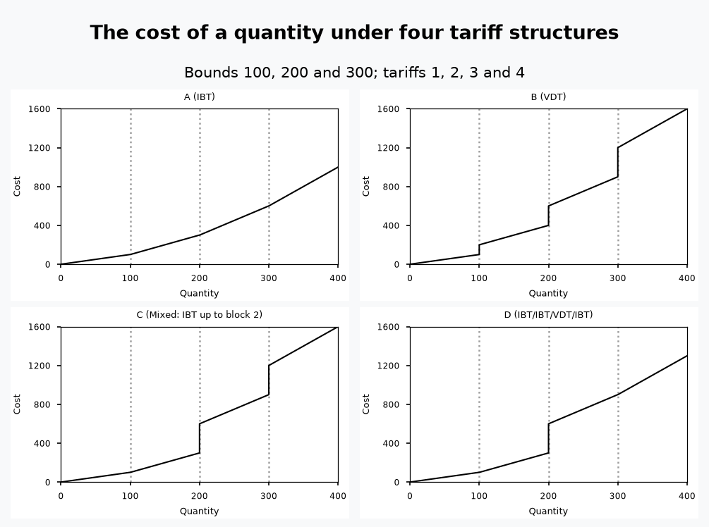
§3.6). A VDT block makes the cost jump at its lower bound: one more unit is priced at the higher tariff for the whole quantity." />A survey records what a household spends on a good, not the quantity it buys. The schedule turns the expenditure \(e\) into a quantity. Net of the fee, \(e - F\) buys, block after block, the quantity whose cost it covers. The expenditure is spent in the last block whose lower bound costs less than it: the threshold of block \(b\) is \(T_b = X_{b-1}\) for an IBT block and \(T_b = b_{b-1}\,p_b\) for a VDT block, and the block of the expenditure is \(h = \max\{b : T_b < e - F\}\). Then
\[q = \begin{cases} b_{h-1} + \dfrac{e - F - X_{h-1}}{p_h} & \text{block $h$ IBT} \\[2mm] \dfrac{e - F}{p_h} & \text{block $h$ VDT.} \end{cases}\]
At the threshold of a VDT block the cost jumps (see the figure above). An expenditure that falls in the gap — more than the cost of the block below, less than the first unit of the VDT block — stays in the block below and is read at its tariff, as in SUBSIM. A household that spends nothing on the good buys nothing, and pays no fee.
The blocks of a schedule count the quantity of the
household (electricity, water: one meter per household)
or of the individual (a quota per person): option
unit(). The survey records the expenditure per person; with
blocks per household, the schedule applies to the household’s quantity,
the household size times the quantity per person, and every impact is
then brought back per person.
A subscription fee \(F\) — the price of the meter or of the
service — is paid on top of the tariffs by the households that buy the
good (option fee()). It enters the cost of the quantity,
the change of well-being and the change of the average price (Chapter
4).
pschsetpschset name, prices(numlist) [bounds(numlist) subsidies(numlist) structure() cut(#) unit() fee(#)]
pschset name, from(var_bounds var_prices [var_subsidies]) nblock(#) [structure(varname) …]
pschset name, by(varname) schedules(value = name [value = name …])
pschset list | pschset drop name … | pschset clearBy values. prices() gives one tariff
per block, bounds() the upper bounds of all the blocks but
the last, subsidies() one unit subsidy per block.
structure() is ibt (the default),
vdt, mixed with cut(#) the last
IBT block, or one word per block. unit() is
household (the default) or individual;
fee() the subscription fee.
. pschset flour_i, bounds(36) prices(.09 1.03) subsidies(.94 0) unit(individual)
. pschset elec_i, bounds(100 300) prices(.10 .20 .30) subsidies(.3 .2 .1)
. pschset elec_f, bounds(100 300) prices(.15 .30 .45) fee(2)
. pschset elec_b, bounds(100 200 300) prices(1 2 3 4) structure(ibt ibt vdt ibt)SUBSIM’s syntax. The do-files written for SUBSIM in
Stata run as they are: nblock(#), mxb1()
mxb2() … (bounds), tr1() tr2() …
(tariffs), sub1() … (subsidies), bun(1|2)
(household or individual), str(1|2|3) (IBT, VDT, mixed),
bcut(#), sfee(#):
. pschset elec_s, nblock(3) bun(1) str(1) mxb1(100) mxb2(300) tr1(.10) tr2(.20) tr3(.30) sub1(.3) sub2(.2) sub3(.1)declares the same schedule as elec_i. Every value must
be given: a missing tariff or bound is refused.
By variables. A schedule of many blocks is easier to
prepare as a table: its variables are added at the top of the household
data, one row per block — the maximum of the block, its tariff, its
subsidy and its structure (IBT or VDT, or 1
and 2) — with missing values below. from() names the
variables, and nblock(#) how many rows to read: only the
first # rows are read, so the household data can go on below, and there
is no limit to the number of blocks. With the variables of the example
data of help pschset,
. list spending bound tariff subsidy kind in 1/6
───┬────────────────────────────────────────────
│ spending bound tariff subsidy kind
───┼────────────────────────────────────────────
1 │ 45 100 1 0.4 IBT
2 │ 50 200 2 0.3 IBT
3 │ 55 300 3 0.2 VDT
4 │ 60 400 4 0.1 IBT
5 │ 65 . . . .
6 │ 70 . . . .
───┴────────────────────────────────────────────
. pschset elec_v, from(bound tariff subsidy) nblock(4) structure(kind)declares exactly the schedule of
pschset elec_b, bounds(100 200 300) prices(1 2 3 4) subsidies(.4 .3 .2 .1) structure(ibt ibt vdt ibt)
(the maximum of the last block is not read).
By group. A price can depend on a group of
households — a region, the sex of the head. Declare the schedule of each
group, then the schedule by group (in the example data,
rururb is 1 in urban areas and 2 in rural areas):
. pschset elec_urban, bounds(100 300) prices(.12 .24 .36)
. pschset elec_rural, bounds(100 300) prices(.08 .16 .24)
. pschset elec_g, by(rururb) schedules(1 = elec_urban 2 = elec_rural)All the schedules of a group schedule must count the blocks the same
way (unit()).
Keeping a schedule. A schedule lives in the session
until clear all; declare it in the script that runs the
simulation. inisave(file) also writes the schedule to a
file (.psc) as a pschset command — for a
schedule read from variables, the command that reads them — and
pschini file opens the box of pschset filled
with it (it also reads the .psc files written by SUBSIM in
Stata). pschset list lists the schedules of the
session.
pschdespschdes shows the blocks of one or several schedules,
and with graph draws their tariffs:
. pschdes before after
Price schedule: before
────────┬────────────────────────────────────
Number │ Block Tariff Subsidy
────────┼────────────────────────────────────
1 │ 0 - 100 0.100000 0.000000
2 │ 100 - 300 0.200000 0.000000
3 │ 300 and more 0.300000 0.000000
────────┴────────────────────────────────────
Tariff structure: Increasing block tariff (IBT)
Blocks counted per household; subscription fee: 0
Price schedule: after
…
Tariff structure: Volume-differentiated tariff (VDT)
. pschdes before after, graph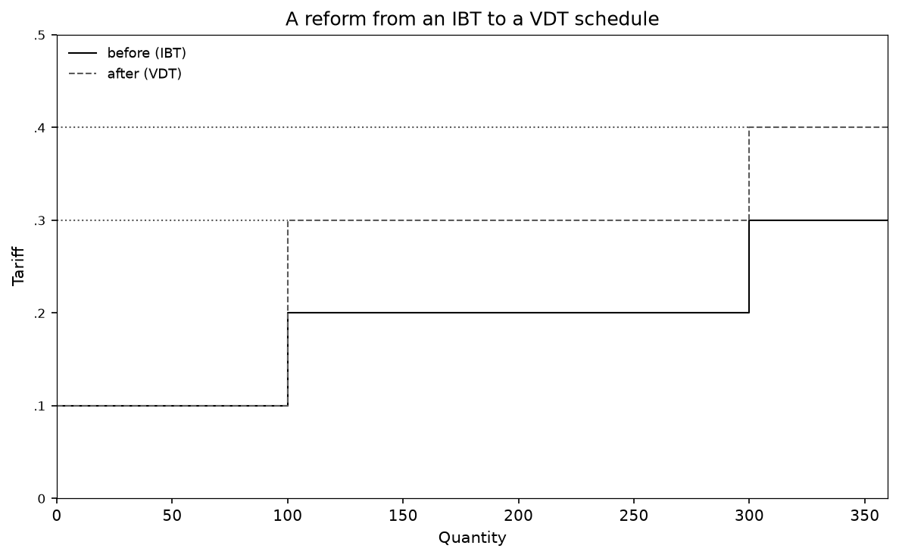
Three graphs are offered:
| Option | The graph |
|---|---|
graph, graph(tariff) |
the tariffs against the quantity, a step line per schedule |
graph(cost) |
the cost of a quantity, subscription fee included: a VDT block makes the cost jump at its lower bound, a fee at the first unit; the bounds of the blocks are dotted |
graph(average) |
the average price paid, the cost over the quantity — the price to which the quantities respond in SUBSIM (§4.4) |
The schedules are drawn in one graph, to compare them, or with
separate one panel each, on the same scales, gathered in
one figure (the figure of §3.2). The graph is a graph of the session: it
opens in the graph editor, and takes the options of twoway
(titles, axes, legend, scheme(), one pattern or colour per
schedule with lpattern(solid,dash) …).
sgra(file) saves it as an .aurg file and
egra(file) as a picture.
This chapter gives the formulas SUBSIM applies to each household and each item. They follow Araar and Verme (2012, 2016); for the users of SUBSIM in Stata, Chapter 9 sums up the rules behind the results.
| Symbol | Meaning |
|---|---|
| \(h\) | a household; \(n_h\) its size, \(\omega_h\) its sampling weight |
| \(y_h\) | its total expenditure per person (the living standard) |
| \(z\) | the poverty line, per person |
| \(k = 1,\dots,K\) | the items |
| \(e_{hk}\) | the expenditure per person of household \(h\) on item \(k\) (subscription fee included) |
| \(C^0_k(q),\ C^1_k(q)\) | the cost of a quantity \(q\) before and after the reform (§3.2), fees \(F^0_k\), \(F^1_k\) included |
| \(q^0_{hk}\) | the quantity bought before the reform (§3.3) |
| \(p^0_j,\ p^1_j,\ s_j\) | the initial and final tariffs and the initial unit subsidy of a segment \(j\) (§4.2) |
| \(\varepsilon_k\) | the own-price elasticity of item \(k\) |
Every statistic weights household \(h\) by \(\omega_h n_h\): it counts persons. The impacts are per person; when the blocks of a schedule count the household’s quantity, the schedule applies to \(n_h q\) and the impact is divided by \(n_h\). To lighten the notation, the subscripts \(h\) and \(k\) are dropped when there is no ambiguity.
The initial and final schedules may cut the quantity into different blocks. SUBSIM reads a reform on their joint structure: the union of the two lists of bounds. Each segment \(j\) of it lies within one initial block and one final block, and carries their tariffs \(p^0_j\) and \(p^1_j\), the initial subsidy \(s_j\) and the structures (IBT or VDT) of the two blocks.
The household’s expenditure, net of the fee, is spent in one segment — its class \(c\) — by the rule of the initial schedule (§3.3). The class fixes the price of every unit. When the class lies in a VDT block, all the units take the price of the class; when it lies in an IBT block, each segment keeps its own price, except the segments up to the last VDT block below the class, which take that block’s price. The same reading, with the final structures, gives the final prices. With \(q_j\) the initial quantity in segment \(j\) — the whole width of the segment below the class, what is left of the quantity in the class — and \(\Delta p_j\) the change of the price paid for its units,
\[C^1(q^0) - C^0(q^0) \;=\; (F^1 - F^0) + \sum_j q_j\, \Delta p_j .\]
Example. A reform moves electricity from an IBT schedule to a VDT schedule (Araar and Verme’s guide, Annex 1):
| Block | Initial tariff (IBT) | Final tariff (VDT) |
|---|---|---|
| 0 – 100 | 0.10 | 0.10 |
| 100 – 300 | 0.20 | 0.30 |
| 300 and more | 0.30 | 0.40 |
A household that consumes 250 units paid \(100 \times 0.10 + 150 \times 0.20 = 40\); it now pays \(250 \times 0.30 = 75\): its units of the first block are \(0.20\) dearer and those of the second \(0.10\) dearer, \(100 \times 0.20 + 150 \times 0.10 = 35\). At 350 units: \(65\) before, \(350 \times 0.40 = 140\) after, the three segments \(0.30\), \(0.20\) and \(0.10\) dearer.
The marginal approach. The money-metric change of well-being of a household is the change of the cost of its initial quantity, with a minus sign:
\[\Delta w \;=\; -\big[C^1(q^0) - C^0(q^0)\big] \;=\; -(F^1 - F^0) - \sum_j q_j\, \Delta p_j .\]
For a linear price, \(\Delta w = -q^0\,\Delta p = -e\, dp\) with \(dp = \Delta p / p^0\) the relative change of the price: the loss is the expenditure on the item times the relative rise of its price (Coady et al. 2006). It is a first-order approximation: for a small change of price, the household’s re-allocation of its budget among goods does not change its well-being to the first order (the envelope theorem), whatever its behavioural response. The fee is paid by the households that buy the good: a household that buys nothing loses nothing. For large price rises the marginal approach overstates the loss, because the household substitutes away from the dearer good; §4.7 gives the measures that take it into account.
The interaction of the price and quantity changes.
With appr(2), SUBSIM adds the triangle under the demand
curve:
\[\Delta w \;=\; -\big[C^1(q^0) - C^0(q^0)\big] \;-\; \tfrac12\, \Delta q\, \Delta \bar p ,\]
with \(\Delta q\) the change of
quantity of §4.4 and \(\Delta\bar p\)
the change of the average price paid for the initial quantity. It is the
second-order Taylor approximation of the consumer surplus with the
item’s own elasticity (§4.7); appr(2) is the same as
meas(2).
Cobb-Douglas preferences. With wappr(2)
(the same as meas(3) model(1)), the change of well-being is
the equivalent variation of a household with Cobb-Douglas preferences,
calibrated on its budget shares:
\[\Delta w \;=\; (y - F^1)\left(\frac{\bar p^0}{\bar p^1}\right)^{s} - (y - F^0), \qquad s = \frac{e - F^0}{y - F^0},\]
where \(\bar p^0\) is the average tariff the household paid and \(\bar p^1\) the average price at which the same expenditure buys at the final tariffs: \(\bar p^0 / \bar p^1 = q^{1*}/q^0\), with \(q^{1*}\) the quantity that \(e - F^0\) buys under the final schedule (§3.3). For several items together, the price changes are combined in one price index (§4.7) — the total is not the sum of the items’ columns.
The quantity bought changes with the price, through the own-price elasticity of the item:
\[\Delta q \;=\; \varepsilon\, q^0\, d\bar p, \qquad d\bar p \;=\; \frac{C^1(q^0) - C^0(q^0)}{C^0(q^0)}, \qquad \Delta q \ge -q^0 .\]
\(d\bar p\) is the change of the average price the household paid for its initial quantity, subscription fees included: the price per unit of what it bought, as if the seller showed no block structure. Households facing block tariffs respond to the average price rather than to the marginal tariff (Ito 2014). For a linear price, \(d\bar p = dp\) and \(\Delta q = \varepsilon\, q^0\, dp\).
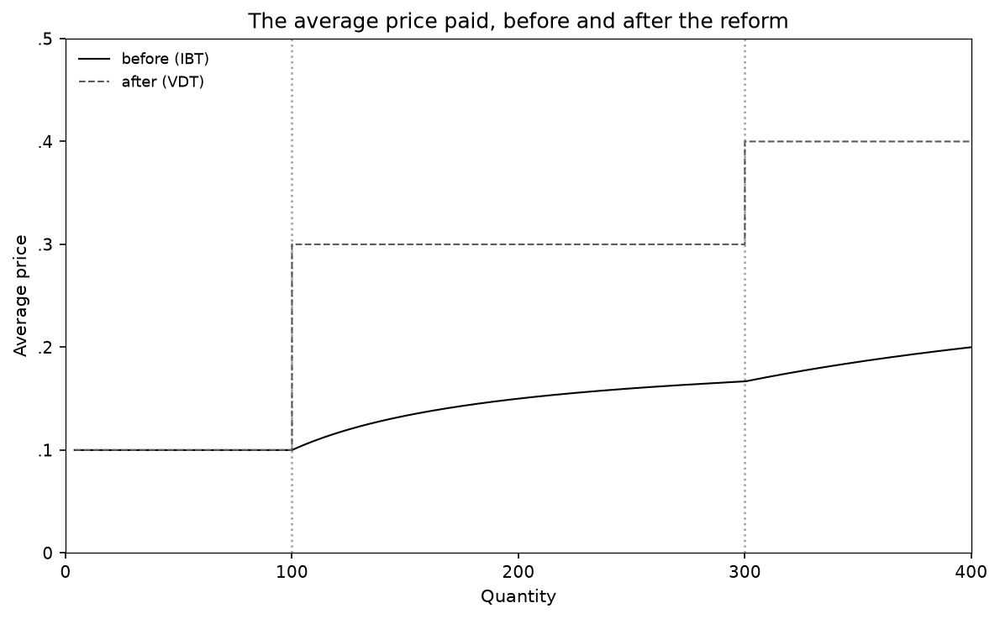
§4.2: pschdes before after, graph(average). Under the IBT schedule it rises smoothly with the quantity; under the VDT schedule it jumps at each bound. A household that consumes 250 units sees its average price rise from 0.16 to 0.30." /> The quantity never falls below zero: a quantity that would become negative is set to zero — but a zero in the tables of quantities is a sign that the elasticity is too large for the price change (§4.5).The units given up come off the top blocks first, and the units bought in addition go to the household’s block and the ones above: the units of a block schedule are consumed from the first block up. This matters for the revenue (§4.6).
The quantity always follows the elasticity given, whatever the measure of well-being. The elasticity enters neither the marginal change of well-being nor its Cobb-Douglas form: it moves the quantities and the revenue.
The elasticity is the main assumption of a simulation, and a hard one to fix:
With a linear demand curve, the elasticity at the initial price follows from the elasticity at the final price \(\varepsilon_f\) and the relative change of the price \(dp\):
\[\varepsilon_i \;=\; \frac{\varepsilon_f}{1 + dp\,(1 - \varepsilon_f)} .\]
When the price triples (\(dp = 2\))
and the elasticity at the market price is \(-0.3\), the elasticity to use is \(-0.3 / 3.6 \approx -0.08\). The most
sensible course is often to run the simulation with several elasticities
— from zero to the elasticity at the market price — and compare: with a
table of items, each scenario has its own elasticities
(elas1(), elas2(), …), and graph 6 draws the
revenue against the elasticity.
The impact on government revenue is the fall of the subsidy bill. The bill before the reform is the subsidy on the initial units, \(S^0 = \sum_j q_j\, s_j\). After the reform the household buys \(q^1 = q^0 + \Delta q\), the units consumed from the first block up, \(q^1_j\) in segment \(j\). The cost of a unit to the producer does not change — the reform passes entirely to the consumer price — so a unit’s subsidy after the reform is its cost, its initial price plus its initial subsidy, less its final price:
\[s^1_j = p^0_j + s_j - p^1_j, \qquad S^1 = \sum_j q^1_j\, s^1_j, \qquad \Delta R = S^0 - S^1 .\]
A unit’s final subsidy can be negative: the unit is then taxed. When no subsidy is given for an item, its cost is taken as zero, and the revenue is the change of the producers’ sales, \(\Delta R = p^1 q^1 - p^0 q^0\).
For sugar (Chapter 2), the subsidy of a kilogram falls from 1.068 to \(0.25 + 1.068 - 0.5704 = 0.7476\), and the households buy 64% less (\(-0.5 \times 128\%\)): the bill falls by \(1 - 0.36 \times 0.7476 / 1.068 = 75\%\), from 51.6 to 13.0 million.
Beyond the marginal approach, SUBSIM offers the measures of Araar and
Verme (2016), with the option meas(). For item \(k\), per person, let \(e_k\) be the expenditure (fees included),
\(w_k = e_k / y\) its share in total
expenditure, \(dp_k\) the change of the
average price paid for its initial quantity (§4.4) and \(\ell_k = C^1_k(q^0_k) - C^0_k(q^0_k)\) the
marginal loss.
First order (meas(1), the default;
Laspeyres):
\[\Delta w_k = -\ell_k .\]
Second-order Taylor approximation
(meas(2)), with sotm(1) the consumer surplus,
sotm(2) the equivalent variation, sotm(3) the
compensating variation:
\[\Delta w_k \;=\; -\ell_k - \tfrac12\, e_k \sum_j E_{kj}\, dp_k\, dp_j ,\qquad E_{kj} = \begin{cases} \varepsilon_{kj} & \text{consumer surplus} \\ \varepsilon_{kj} - w_j\,\eta_k & \text{equivalent variation} \\ \varepsilon_{kj} + w_j\,\eta_k & \text{compensating variation,} \end{cases}\]
where \(\varepsilon_{kj}\) are the
uncompensated price elasticities (the matrix of matpel())
and \(\eta_k\) the income elasticities
(the vector of matiel()). Without a matrix, the consumer
surplus uses the items’ own elasticities, \(E_{kk} = \varepsilon_k\), the response
\(\varepsilon_k\, dp_k\) taken at −1 at
most (the quantity does not fall below zero) — the triangle of
appr(2). The equivalent and compensating variations need
both matrices.
Exact equivalent and compensating variations
(meas(3), meas(4)), for preferences calibrated
on the budget shares — Cobb-Douglas (model(1)) or CES
(model(2), with subs(σ) the elasticity of
substitution, 0.6 by default). With \(r_k =
\bar p^1_k / \bar p^0_k\) the ratio of the average prices at
which the same spending buys (block schedules included), \(s_k\) the share of the tariffs of item
\(k\) in the income net of the initial
fees, \(Y = y - \sum_k F^0_k\), and the
price index
\[P = \prod_k r_k^{\,s_k} \quad\text{(Cobb-Douglas)},\qquad P = \Big(\sum_k s_k\, r_k^{\,1-\sigma} + 1 - \sum_k s_k\Big)^{\frac{1}{1-\sigma}} \quad\text{(CES)},\]
\[EV = \frac{Y - \sum_k \Delta F_k}{P} - Y, \qquad CV = Y\,(1 - P) - \sum_k \Delta F_k .\]
With \(\sigma = 0\) (no substitution) the compensating variation is the first order; as \(\sigma \to 1\) the CES tends to Cobb-Douglas.
One item, several items. An item alone has its own terms. The items together — the total column, the direct effect, the indirect effect — have the double sum of Taylor’s approximation, or the price index of all of them: the total is not the sum of the items’ columns. The consumption aggregates of the indirect effects (Chapter 5) have their own elasticity only and, in the equivalent and compensating variations of Taylor’s approximation, an income elasticity of 1.
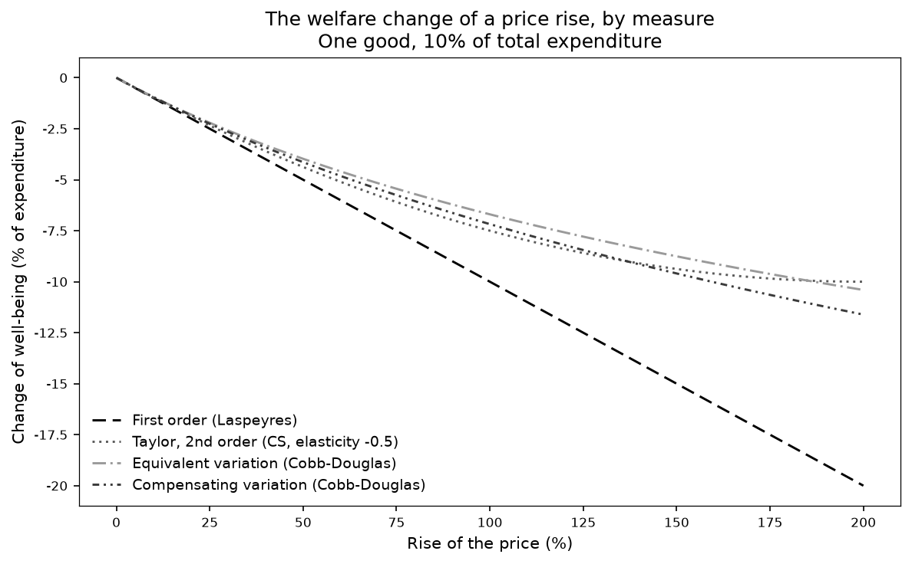
The measures matter when the price changes are large. On the three items of the example data (§8.3) — whose prices rise several fold: the price of flour for bread from 0.037 to 0.3136, +748% — the total impact on well-being per person is:
| Measure | Option | Impact per person |
|---|---|---|
| First order (Laspeyres) | meas(1) |
−23.92 |
| Taylor, consumer surplus | meas(2) |
−13.66 |
| Equivalent variation, Cobb-Douglas | meas(3) |
−8.06 |
| Compensating variation, Cobb-Douglas | meas(4) |
−8.10 |
| Compensating variation, CES, \(\sigma = 0.5\) | meas(4) model(2) subs(.5) |
−12.54 |
The first order is an upper bound of the loss; it is accurate for moderate price changes and remains the reference of most studies. For very large rises, a measure that takes substitution into account is more realistic.
The living standard of a person is the expenditure per person of the
household, \(x_h = y_h\) — or, with
aehs(), the expenditure per adult equivalent \(x_h = y_h\, n_h / a_h\) with \(a_h\) the size in adult equivalents, the
impacts being scaled the same way. After the reform, \(x'_h = x_h + \Delta w_h\), the change
of well-being of all the items. With the poverty line \(z\), the Foster-Greer-Thorbecke indices
are
\[P_\alpha \;=\; \frac{\sum_h \omega_h n_h \left(1 - \dfrac{x_h}{z}\right)^{\alpha} \mathbb 1[x_h < z]} {\sum_h \omega_h n_h},\]
\(\alpha = 0\) the poverty headcount
(table 4.7), \(\alpha = 1\) the poverty
gap (table 4.8); table 4.9 is the Gini index. Each table gives the level
before the reform, after the change of each item alone, and after the
reform, with the change, its standard error and its p-value. The
standard errors take the survey design into account (strata, primary
sampling units, weights) by linearization; the levels before and after
are measured on the same households, so the variance of the change
accounts for their covariance. The method is the one of AURA’s
distributive analysis package (the DAAP manual, Chapter 2). With
se, the tables of groups also give the standard errors of
their statistics, each group being a subpopulation of the design.
The compensating transfer is the cash transfer \(T\) that brings the poverty headcount back
to its level before the reform. It is paid to each person
(typetr(1), the default) or to each household
(typetr(2)), to everyone or to the group that an indicator
marks (gtarg(var): \(T\)
times the indicator \(g_h\)). With
\(a_h = g_h\) for a transfer per person
and \(a_h = g_h / n_h\) for a transfer
per household, a person is poor after the reform and the transfer
when
\[x'_h + T\, a_h < z .\]
The poor of the group after the reform, new or not, leave poverty in the order of their gap \((z - x'_h)/a_h\); \(T\) is the smallest gap that lifts enough persons out of poverty to bring the headcount back to its level before the reform. SUBSIM computes it exactly. The group stands for a part of the population, not for households chosen one by one: all its members receive \(T\), poor or not, hit by the reform or not — the cost counts them all — and the poor outside it receive nothing. The cost of the transfer is \(T \sum_h \omega_h n_h a_h\).
\(T\) is zero when the reform does not raise the headcount, and missing when even lifting all the poor of the group out of poverty does not bring the headcount back. The main results give the transfer per beneficiary (per person or per household), per person of the population, and its cost; graphs 8 to 10 show the impacts for any transfer from zero to twice the compensating one.
A reform of the price of an intermediate good — petroleum products, electricity, gas — changes the costs of all the sectors that use it, and through their prices, the cost of living of the households. These indirect effects are measured with an input-output table: the price model gives the change of the price of every sector, and the households’ consumption, grouped in aggregates matched to the sectors, takes these price changes.
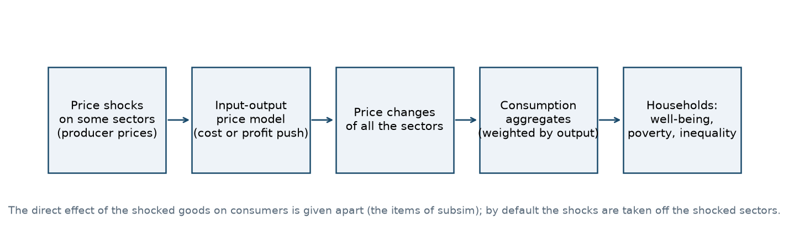
The table is a dataset of the Workspace, loaded with use
beside the household survey: \(n\)
numeric variables, one per sector, and \(n +
1\) rows. Row \(i\), column
\(j\) is the value \(Z_{ij}\) of the inputs that sector \(j\) buys from sector \(i\); the last row is the value added \(V_j\) of each sector. The variable labels
name the sectors. The output of sector \(j\) is the total of its column, \(X_j = \sum_i Z_{ij} + V_j\), and dividing
each column by it gives the technical coefficients and
the value added per unit of output:
\[a_{ij} = \frac{Z_{ij}}{X_j}, \qquad v_j = \frac{V_j}{X_j}, \qquad \sum_i a_{ij} + v_j = 1 .\]
The table must be in the same currency and for the same year as the household survey; the adjustment, when the years differ, is the user’s.
A shock is an exogenous change \(s_i\) of the producer price of a sector \(i\) (in %, in the command); \(S\) is the set of the shocked sectors, \(A = (a_{ij})\) the matrix of the coefficients and \(s\) the vector of the shocks. In the cost-push model, each sector passes the change of its input costs on to its price: \(dp_j = \sum_i a_{ij}\, dp_i\).
Cost push, exogenous shocks
(iomodel(1) tyshock(1), the default). The shocked sectors
keep the shocked price — a country that imports the good does not set
its world price. With \(\bar A\) the
matrix \(A\) without the rows and
columns of the shocked sectors and \(d^0_j =
\sum_{i \in S} a_{ij} s_i\) the first-round effect on the other
sectors,
\[dp = (I - \bar A')^{-1} d^0 \quad\text{(long term, \texttt{adshock(2)})},\qquad dp = \sum_{t=0}^{k-1} (\bar A')^{t}\, d^0 \quad\text{(short term, $k$ periods: \texttt{nadp($k$)})}.\]
Cost push, endogenous shocks
(tyshock(2)). The shocked sectors also pass on the change
of their own input costs:
\[dp = (I - A')^{-1} s \quad\text{(long term)},\qquad dp = \sum_{t=0}^{k} (A')^{t}\, s \quad\text{(short term, $k$ periods)}.\]
The short term counts the first rounds of the adjustment (\(k = 1\) by default), the long term all of them. For a rise of prices, the four options are ordered: the exogenous short term gives the smallest effects, the endogenous long term the largest; a lower and an upper bound are worth reporting.
Marginal profit push (iomodel(2)).
Markets adjust fully and the producers keep their margin per unit: the
shocked sectors’ outputs cost \(1 +
s_i\) more as inputs, the value added per unit of output does not
change,
\[p = (I - A'\,T)^{-1} v, \qquad T = I + \operatorname{diag}(s), \qquad dp = p - 1\]
(without a shock, every price is 1).
The command pciom computes these price changes alone
(§5.5); subsim uses them for the households.
A household survey records hundreds of goods; an input-output table has tens of sectors. The user prepares in advance consumption aggregates — the expenditure per person on the goods of one sector or of a few — and the sectors each aggregate matches. A consumption aggregate \(g\) matched to the sectors \(J_g\) takes the mean of their price changes, weighted by their output:
\[dp_g \;=\; \frac{\sum_{j \in J_g} X_j\, dp_j}{\sum_{j \in J_g} X_j} .\]
If food matches sectors 8 and 10 with outputs 100 and 400, and their
prices rise by 10% and 20%, the price of food rises by \(\tfrac{100}{500}\,10\% + \tfrac{400}{500}\,20\% =
18\%\). Each aggregate is then an item with a linear price going
from 1 to \(1 + dp_g\), and its own
elasticity (ielas(), 0 by default): its change of
well-being follows the measure of §4.7, its quantity §4.4.
The table of aggregates follows the convention of the tables of
items: its variables are at the top of the household data, one row per
aggregate — the expenditure variable (iitnames()), the
matching sectors (match(), as 36 37 38 or
36/38), the name (isnames()) and the
elasticity (ielas()) — and initems(#) says how
many rows to read.
The direct effect of the shocked goods on the consumers is the items’
(Chapter 4): electricity bought by a household is an item, with its own
prices. To avoid counting it twice, the shocks are taken off the
shocked sectors by default: an aggregate matched to a shocked
sector keeps only what the model adds to the shock — nothing with
exogenous shocks, the feedback of its own costs with endogenous ones.
With allind, the shocks stay in the shocked sectors’
prices: for a simulation of the indirect effects without items, where
the aggregates carry the whole effect (with the profit push, a shocked
sector’s price then also takes the shock, \((1
+ s_i)(1 + dp_i) - 1\)).
To separate the direct and the indirect effects of one good, run SUBSIM with the good as an item and its sector shocked, exogenous: the items give the direct effect, the aggregates the indirect one. When the good is only a part of its sector — gasoline, 20% of the petroleum sector — the shock on the sector can be scaled accordingly (a rise of 10% of gasoline, a shock of 2% on the sector).
pciompciom , iomatrix(name) shock(sector:change …) [iomodel(1|2) tyshock(1|2) adshock(1|2) nadp(#)
allmodels labsec(varname) graph top(#) sgra(file) egra(file)]pciom shows the change of the price of every sector.
With Egypt’s table of 2015, the producer prices of petroleum products
and gas (sectors 36 to 39) 10% lower, endogenous shocks and the long
term:
. pciom , iomatrix(IOM_EGY2015) shock(36:-10, 37:-10, 38:-10, 39:-10) tyshock(2) adshock(2)
Price changes of the sectors (in %)
──────────────────────────────────────────────────────────────────────┬──────────────────
Sector │ Price change (%)
──────────────────────────────────────────────────────────────────────┼──────────────────
1. Growing of cereals (except rice), leguminous crops and oil seeds │ -0.1275
…
7. Support activities to agriculture and post-harvest crop activities│ -1.2108
8. Fishing and aquaculture │ -0.5174
…
26. Manufacture of other non-metallic mineral products │ -1.3502
…
33. Manufacture of other transport equipment │ -1.7071
…
36. Repair and installation of machinery and equipment │ -10.0001
37. Electric power generation │ -10.0683
38. Services of distribution and transfer of electricity │ -10.2848
39. Gas distribution services │ -10.9802
40. Water collection, treatment and supply │ -1.2691
…With endogenous shocks, the shocked sectors’ prices fall by more than
the shock, as their own costs fall too. allmodels shows the
five models side by side; labsec() names the sectors by a
variable of the data in memory. The shocks are written
sector:change, separated by commas or spaces; the forms of
SUBSIM and WELCOM are read too
(secp1(#) pr1(#) … nshocks(#),
shock1(secp(#) pr(#)) …).
graph draws the sectors whose price changes most —
top(#) of them, 20 by default — in horizontal bars, one per
model with allmodels. The shocked sectors are left out:
their change is the shock, and it would hide the others.
sgra() saves the graph as an .aurg file and
egra() as a picture.
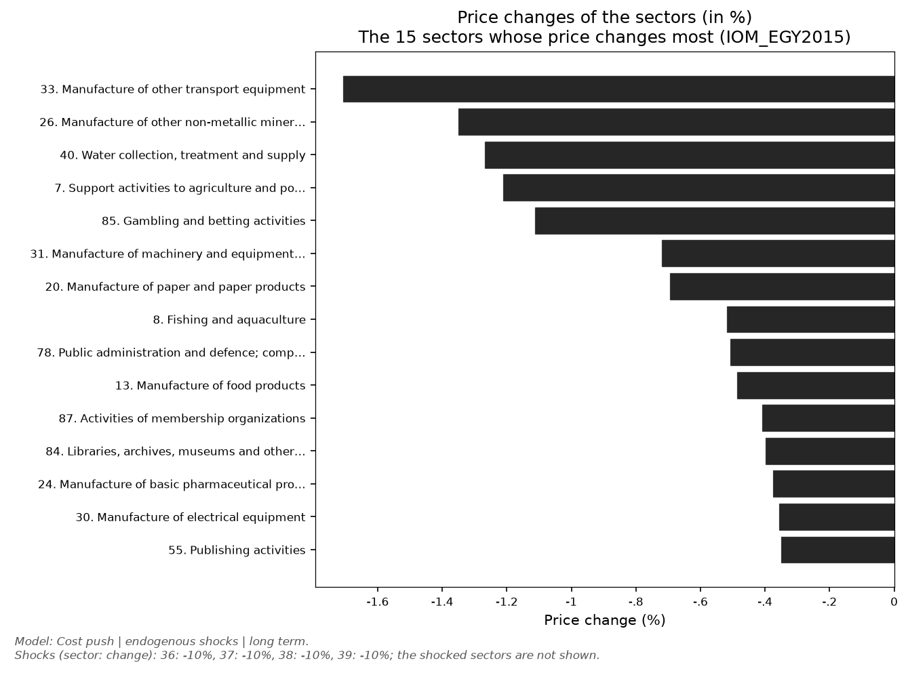
The box of pciom (Statistics ▸ SUBSIM ▸
Input-output models and sectoral price changes, §7.6) writes
the command.
subsim computes the direct effect alone (items, no
iomatrix()), the indirect effect alone (an input-output
table, no item) or both in one simulation:
. subsim pcexp, hsize(hhsize) pline(pline) hgroup(Urbrur) ///
item1(Electricity and gas, var(pc_D0450) initial(1) subsidy(.3) final(1.2)) ///
iomatrix(IOM_EGY2015) ioshock1(36:20, 37:20, 38:20, 39:20) ///
iitnames(item) initems(39) isnames(label) match(code) tjobs(1B 42 47) summaryTable 1B lists the price changes of the aggregates and the sectors each matches; the tables of well-being have the columns of the items, the direct effect, the indirect effect and the total:
Table 4.2: The impact on the per capita well-being (in currency) : Scenario 1
────────┬─────────────────────────────────────┬─────────────────┬─────────
│ Direct │ Indirect │
Groups │ Electricity and gas Direct effect │ Indirect effect │ Total
────────┼─────────────────────────────────────┼─────────────────┼─────────
Urban │ -119.71 -119.71 │ -34.29 │ -154.01
Rural │ -92.69 -92.69 │ -23.84 │ -116.53
────────┼─────────────────────────────────────┼─────────────────┼─────────
Total │ -104.07 -104.07 │ -28.25 │ -132.32
────────┴─────────────────────────────────────┴─────────────────┴─────────The direct effect is the one of the items together, the indirect effect the one of the aggregates together, the total the one of all of them — with the first-order measure, their sum. The main results show the levels before the reform, after the direct effect, after the indirect effect and after the reform, each with its compensating transfer, and graph 9 draws the three poverty headcounts:
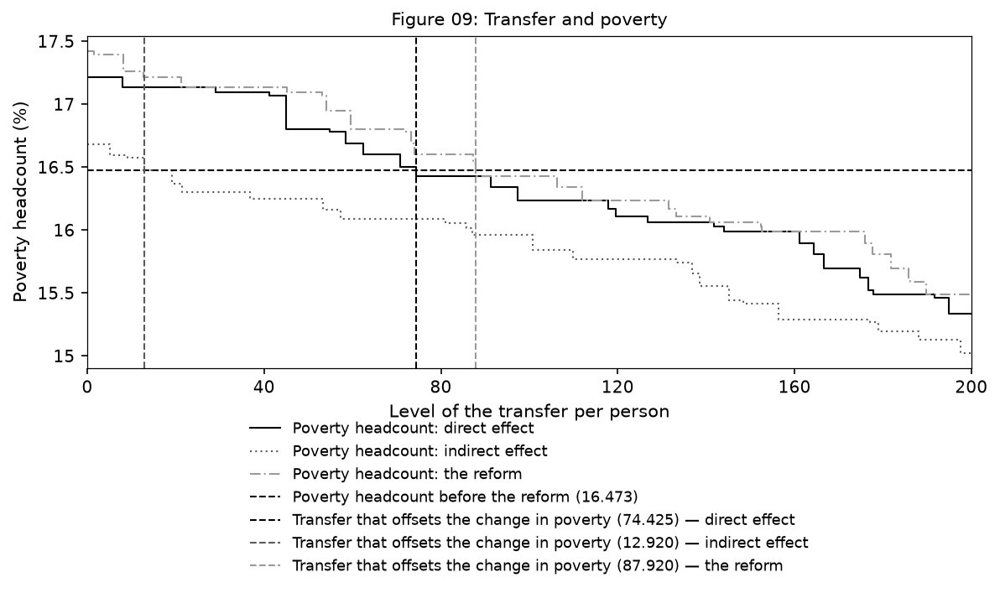
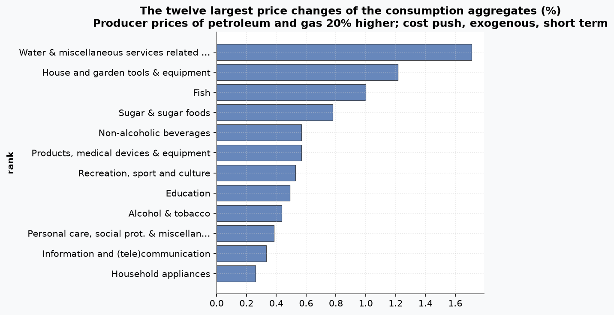
The options direct() and indirect() choose
the columns of the welfare tables: detail one per item (or
aggregate), total only the effect, both. With
the indirect effects alone, the aggregates take the place of the items
in the tables that concern them; the tables and graphs of the
quantities, subsidies and revenue remain the items’ (§6.4).
subsim
commandsubsim pcexp, hsize(varname) pline(varname|#) item1(name, item options) [item2(…) …] [options]
subsim pcexp, hsize(varname) pline(varname|#) itnames(varname) nitems(#) ipsch(varname)
fpsch1(varname) [elas1(varname) fpsch2(…) elas2(…) …] [options]
subsim pcexp, hsize(varname) pline(varname|#) [items] iomatrix(name) ioshock1(sector:change …)
[ioshock2(…) …] iitnames(varname) initems(#) match(varname) [options]pcexp is the total expenditure per person. The survey
weight is the one declared by svyset. The complete list of
options is in help subsim; this chapter gives the main
ones, by theme.
Each item is an option item1(), item2(), …
— as many as needed, numbered from 1:
item1(name, var(varname) [unit(text) initial(#|schedule) subsidy(#) final(#|schedule) elasticity(#)])name is the short name shown in the tables (in quotes
only if it holds a comma or a parenthesis). var() is the
expenditure per person on the item (required), unit() its
unit of quantity, initial() and final() its
initial and final prices — a number or the name of a schedule declared
by pschset — subsidy() the unit subsidy of a
linear initial price, and elasticity() its own-price
elasticity (0 by default). With parameters, a simulation has one
scenario.
When the items are many, or for several scenarios, the items are given by a table: its variables are added at the top of the household data, one row per item, missing values below — as in SUBSIM’s example data:
| Option | The variable holding, row by row, … |
|---|---|
itnames() |
the name of the expenditure variable of the item (required) |
snames() |
the short name of the item |
unit() |
its unit of quantity |
ipsch() |
the name of its initial schedule, the same for every scenario (required) |
fpsch1(), fpsch2(), … |
the name of its final schedule in scenario 1, 2, …
(fpsch1() required) |
elas1(), elas2(), … |
its elasticity in scenario 1, 2, …; an empty cell takes the elasticity of scenario 1, else 0 |
nitems(#) — required — says how many rows to read: only
the first # rows are read, as many items as needed. With a table, the
prices are names of schedules (a linear price is a schedule of one
block). scenarios("label" …) names the scenarios (by
default their numbers) and nscen(#) keeps the first # of
them. itable(name) reads the table in another dataset of
the Workspace. The example of §8.3 has two scenarios: a cut of 30% of
the subsidies and their removal.
| Option | Purpose |
|---|---|
hgroup(varname) |
the groups of the tables; by default the quintiles of
pcexp, households weighted by their size |
aehs(varname) |
the size in adult equivalents: poverty is measured on the expenditure per adult equivalent |
cname(), ysvy(), ysim(),
lcur() |
the country, the year of the survey and of the simulation, the currency (header and workbook) |
meas(), sotm(), model(),
subs(), matpel(), matiel() |
the welfare measure (§4.7); wappr(2) and
appr(2) are SUBSIM’s forms |
typetr(1\|2) |
the compensating transfer per person (1) or per household (2) |
gtarg(varname) |
the transfer goes to the group this indicator marks |
gvimp |
creates the variables of the impact on well-being per person:
_imp_wel_<var> for each item,
_imp_on_well for the reform (_imp_ind_well for
the indirect effect) |
gvqnt |
creates the quantities per person before and after the reform,
_qnt_0_<var> and _qnt_1_<var> |
inisave(file) |
writes the inputs to a file (§6.7) |
With several scenarios, the created variables end in
_s1, _s2, …
tjobs() lists the tables to produce by their codes
(tjobs(11 23 42)); without it, all the tables of the case;
tjobs(off) none. summary adds the main
results. help subsim_tables lists them; in the box,
Select… shows them in a tree.
| Code | Table |
|---|---|
| 1A | The prices of the items: initial price and subsidy, then for each scenario the final price, its change and the elasticity (items) |
| 1B | The price changes of the consumption aggregates, by scenario, with their sectors (indirect effects) |
| 11 | Population and expenditures |
| 21, 22, 23 | Expenditures on the items: total, per household, per capita |
| 24, 25 | Quantities consumed: total, per capita (items) |
| 31, 32 | Structure of the expenditure on the items; its share in total expenditure |
| 33, 34, 35 | Benefits through subsidies: total, per capita, shares (items) |
| 41, 42, 43 | Impact on well-being: total, per capita, in % of expenditure |
| 44, 45 | Impact on quantities: total, per capita (items) |
| 46 | Impact on government revenue (items) |
| 47, 48 | Poverty headcount and poverty gap: before, after each item alone, after the reform; the change, its standard error and p-value |
| 49 | Gini index, the same way |
Tables 4.1 to 4.9 are given for each scenario. The groups are in rows
(then the total), the items in columns (then the total). A table of
groups wider than 100 characters is shown with the items in rows and the
groups in columns (transpose always,
notranspose never); the matrices of r() and
the workbook keep the groups in rows. Other options:
| Option | Purpose |
|---|---|
taggr(1 2 : name \| …) |
adds up the results of some items in one column
(help subsim_aggr); aggr() is the same |
xfil(file) |
also writes the tables to an Excel workbook (.xlsx),
one sheet per table |
lan(en\|fr) |
the language of the tables: English (the default) or French |
se |
the standard errors of the statistics of the groups (each group a subpopulation of the design) |
direct(), indirect() |
the welfare columns with the direct and indirect effects (§5.6) |
The main results (summary) give, before
and after the reform: the welfare per capita, the poverty headcount and
gap, the Gini index; the subsidies, the compensating transfer and the
total budget (in millions); the subsidy and the transfer per capita, and
the transfer per beneficiary. The subsidy per capita after the reform is
the subsidy before less the revenue gain per capita.
gjobs() lists the graphs to draw by their numbers
(gjobs(1 2 4)); without it, or with
gjobs(all), all the graphs of the case;
gjobs(off) none. Graphs 5 to 10 are drawn for each
scenario. help subsim_graphs lists them. The figures below
come from the three items of §8.3 (flour, flour for bread and semolina,
a cut of 30% of the subsidies).
| Number | Graph |
|---|---|
| 1 | The share of each item in expenditure (%), by percentile of expenditure per capita |
| 2 | The per capita benefits of the subsidies, by percentile (items with a subsidy) |
| 3 | The Lorenz curve of expenditure and the concentration curves of the benefits (or expenditures) |
| 4 | The change of the poverty headcount when the price of an item rises by 0 to 100% |
| 5 | The change of government revenue when the price of an item rises by 0 to 100% |
| 6 | The change of government revenue by the elasticity, from −1 to 0 |
| 7 | The change of government revenue when the unit subsidies fall by 0 to 100% |
| 8 | The impact on well-being per capita, by group, with a transfer of \(T\) |
| 9 | The poverty headcount with a transfer of \(T\), its level before the reform, the compensating transfer |
| 10 | The change of government revenue net of a transfer of \(T\) |
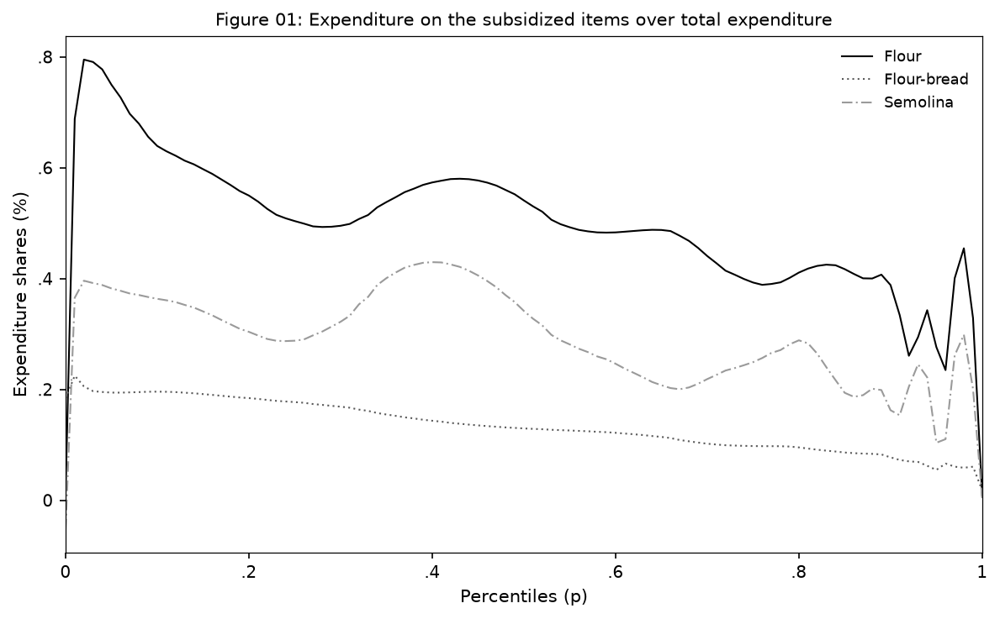
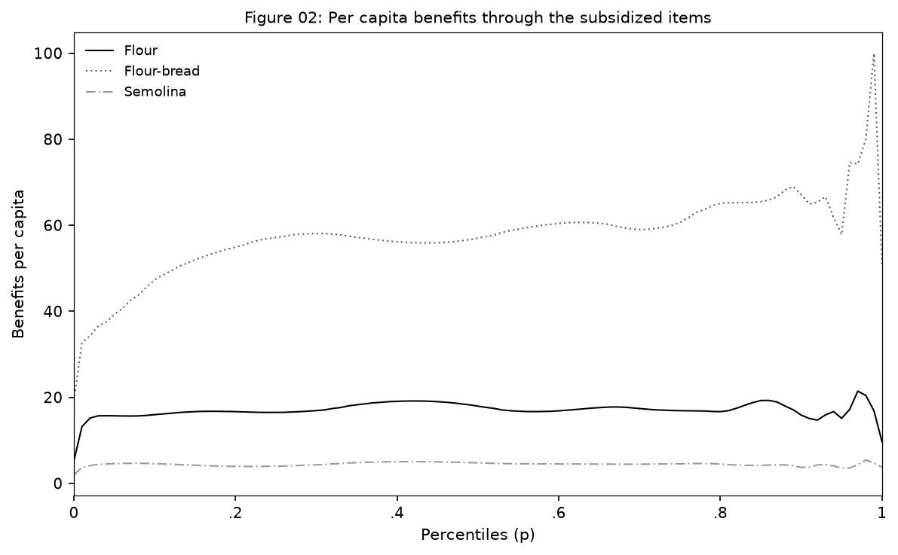
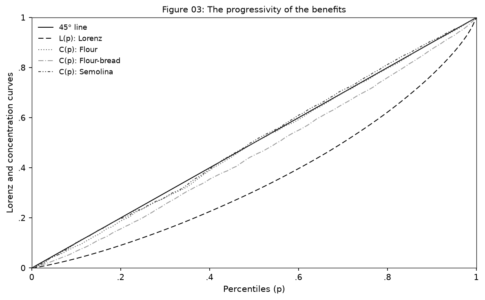
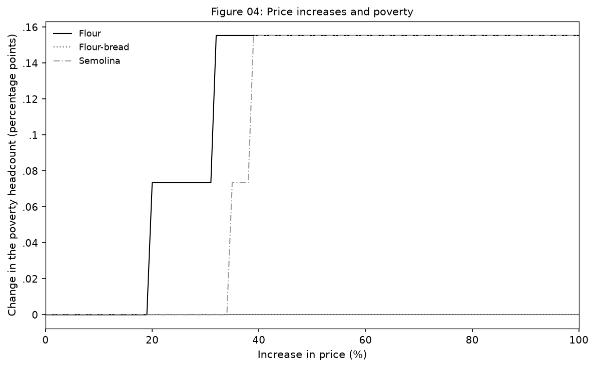
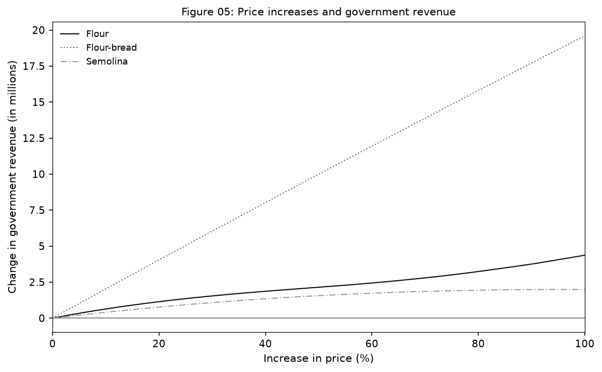
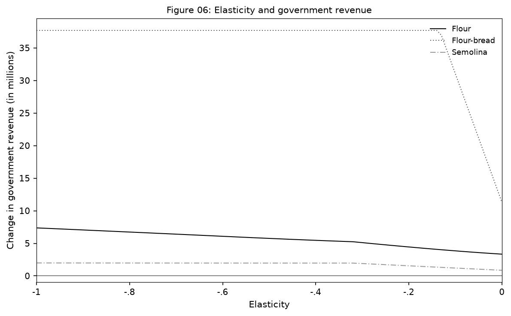
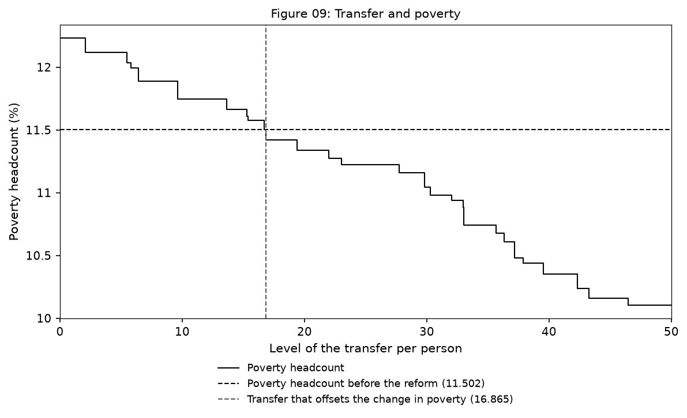
Graphs 1 and 2 are local linear regressions on the percentiles of
expenditure per capita, graph 3 the curves of clorenz.
Graphs 4 to 7 compute the impacts as the tables do, so that at the
scenario’s prices they give the tables’ figures. Graph 9 is the exact
staircase of the headcount: a step at each household’s gap. The transfer
of graphs 8 to 10 goes from 0 to twice the compensating transfer (or to
the mean gap of the poor to the line when there is none), paid as
typetr() and gtarg() say.
| Option | Purpose |
|---|---|
gaggr(1 2 : name \| …) |
adds up some items in one curve, as taggr() in the
tables |
opgr1(min(#) max(#) options) … |
the range of graph 1 (its horizontal axis) and any option of
twoway: titles, axes, legend, scheme(),
lcolor() … |
folgr(folder) |
also writes each graph in this folder, as Fig_#.aurg
(it reopens in the graph editor) and Fig_#.png |
Each graph is a graph of the session: it opens in the graph editor,
can be saved (graph save) and copied to Word (right-click:
EMF, PNG, its code). The graphs are in black and white unless a scheme
is chosen (set scheme dasp, Graphics ▸ Graph
Preferences…, or scheme() in
opgr#()).
The tables are stored in r(), as matrices with the names
of their rows and columns:
| Result | Content |
|---|---|
r(t1A) |
table 1A (a block schedule: missing) |
r(t1B) |
table 1B: the price changes of the aggregates, one column per scenario |
r(t11), r(t21) … r(t35) |
tables 1.1 to 3.5 |
r(t41_s1) … |
tables 4.1 to 4.9 of scenario 1, and so on |
r(summary_s1) |
the main results of scenario 1 |
r(t21_se) … |
with se, the standard errors of the tables |
r(N_items), r(N_scenarios) |
the number of items and of scenarios |
. matrix T = r(t42_s1)
. matrix list Tinisave(file) writes the inputs of a simulation to a
file (.sub by default): the price schedules declared in the
session, as pschset commands, then the subsim
command. The file holds commands: it can be opened and run in the Script
Editor, and the box of subsim reads it back (Main ▸
Load the inputs: the schedules are declared and the box
filled). It plays the role of the .prj and
.pri files of SUBSIM in Stata.
Every SUBSIM command has a dialog box, under Statistics ▸
SUBSIM or with db (db subsim,
db pschset, db pschdes). A box writes the
command it runs: OK runs it and closes the box,
Submit runs it and keeps the box open,
⧉ copies the command, ⟳ resets the box
and ? opens the help. The command is echoed in the
Results window and kept in the Review panel. The fields marked with a
star are required. From a help page, the link run in dialog box
under an example opens the box filled with it.
pschset and
pschdes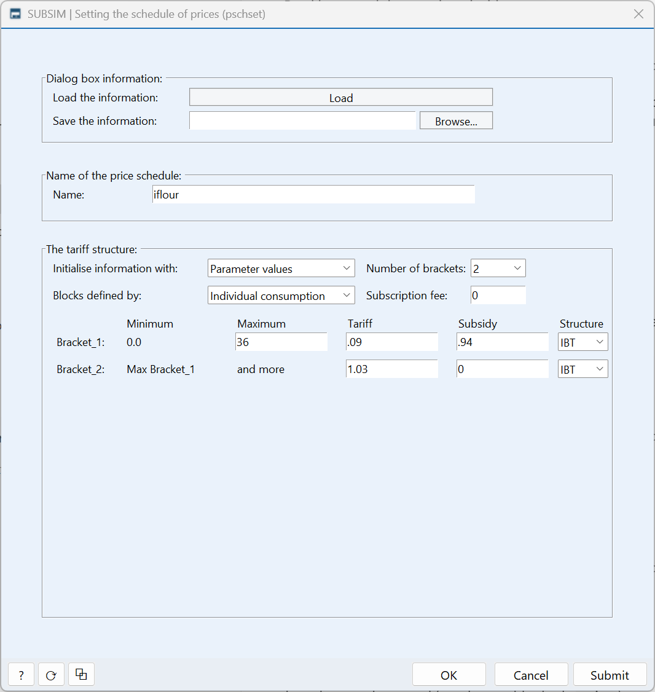
The box of pschset has the name of the schedule, then
the brackets: by parameter values (up to ten brackets,
each with its maximum — the last one has none —, its tariff, its subsidy
and its structure, IBT or VDT), or by variables (the
variables that hold the maxima, the tariffs, the subsidies and the
structures in their first rows, and the number of brackets, required —
as many as needed). Blocks defined by is the unit of the blocks
(household or individual), Subscription fee the fee. Save
the information writes the schedule to a .psc file
(inisave()), which Load the information reads back
— also the .psc files of SUBSIM in Stata.
The box of pschdes lists the declared schedules; its
Graph frame draws them, saves the graph (.aurg) or
exports it (a picture), and its graph tabs set the curves (colour,
pattern, width), the axes, the titles, the legend and the scheme.
subsim: the Main
tab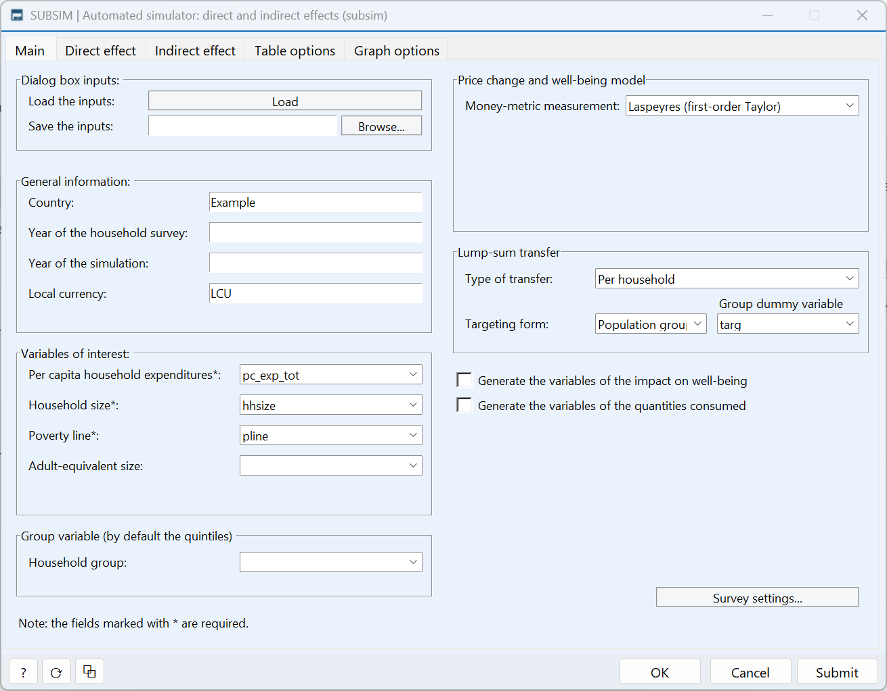
.sub file written by inisave() (§6.7);
Save the inputs writes one when the simulation runs.gvimp, gvqnt). Survey
settings… opens the box of svyset.subsim: the Direct
effect tab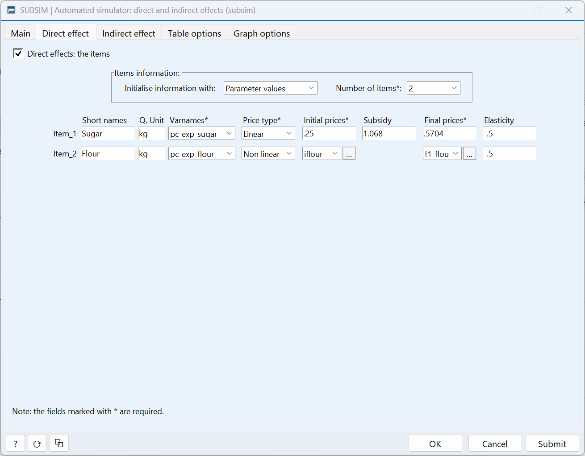
The check box Direct effects: the items turns the items on. Initialise information with chooses how the items are given:
ps_i_1 and ps_f_1 by default,
as in SUBSIM), and … opens the box of
pschset for that schedule.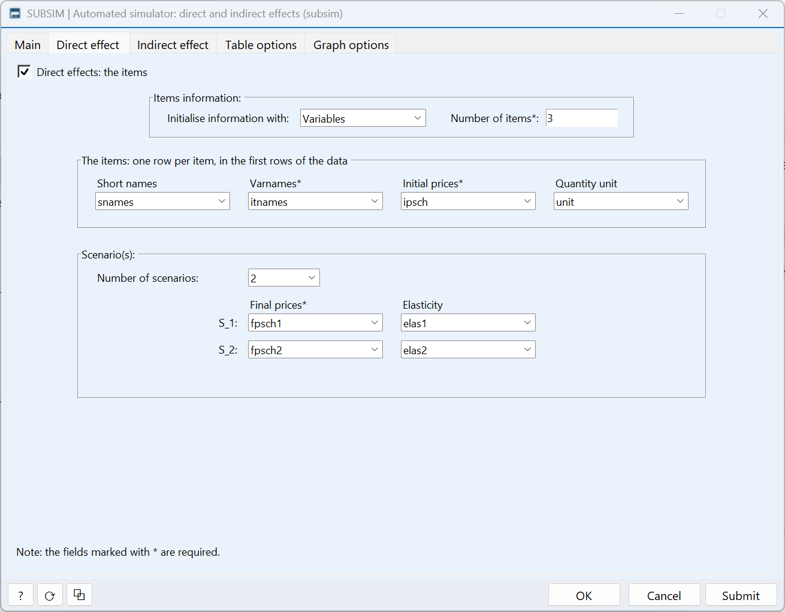
subsim: the
Indirect effect tab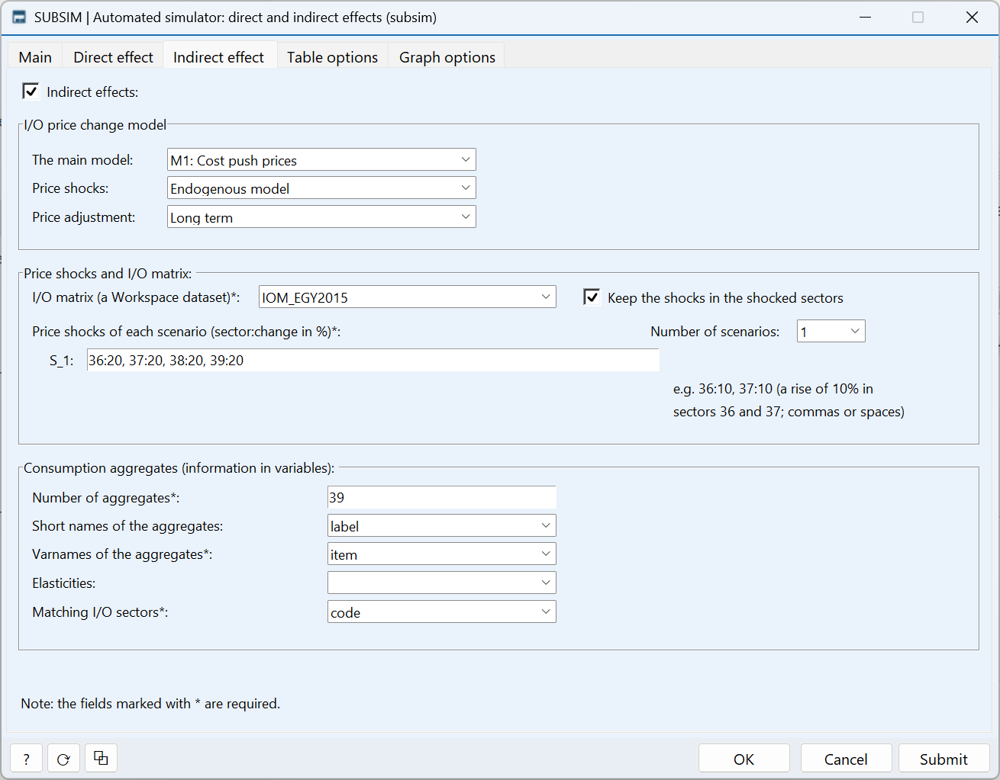
The check box Indirect effects turns them on. I/O
price change model: the model (cost push or marginal profit
push), the shocks (exogenous or endogenous), the adjustment (short term,
with its number of periods, or long term). Price shocks and I/O
matrix: the input-output table (a dataset of the Workspace),
Keep the shocks in the shocked sectors (allind),
and the shocks of each scenario, sector:change separated by
commas or spaces; without items, the number of scenarios is the indirect
tab’s own. Consumption aggregates: their number
(required), the variables of their names, expenditures, elasticities and
matching sectors.
subsim: Table and
Graph options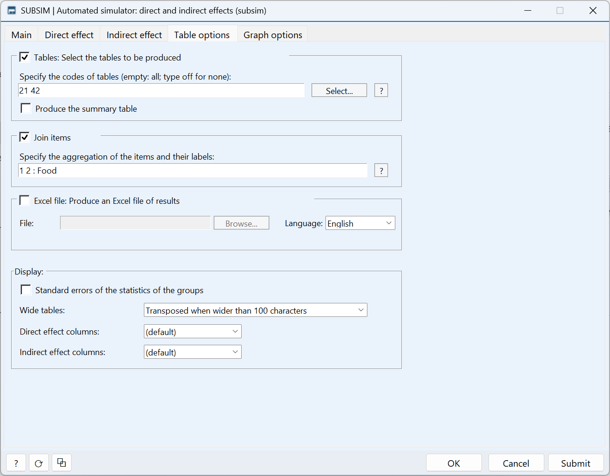
Each frame’s check box turns its options on. Tables:
the codes of the tables (empty: all; off: none), and
Produce the summary table. Select… opens the
list of the tables in a tree, by section: a click checks or unchecks a
table, or a whole section; OK writes the codes. ? opens
the list of the tables and their codes
(help subsim_tables). Join items: the
items to add up (taggr(); its ? explains
the form). Excel file: the workbook and the language of
the tables. Display: the standard errors, the
transposition of wide tables, the columns of the direct and indirect
effects.
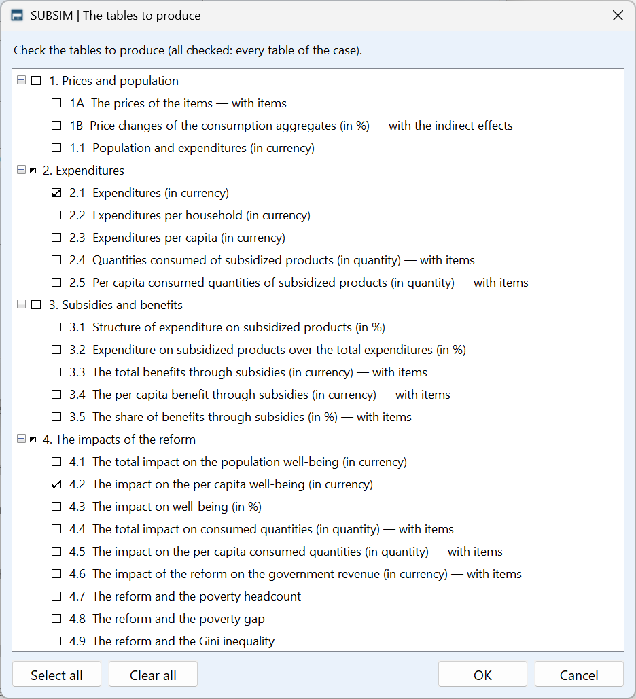
The Graph options tab works the same way for the
graphs (gjobs(), Select…,
?: help subsim_graphs), the joined items
of the graphs (gaggr()), the folder where the graphs are
written (folgr()), and, for each graph, its range (min,
max) and its other options of twoway.
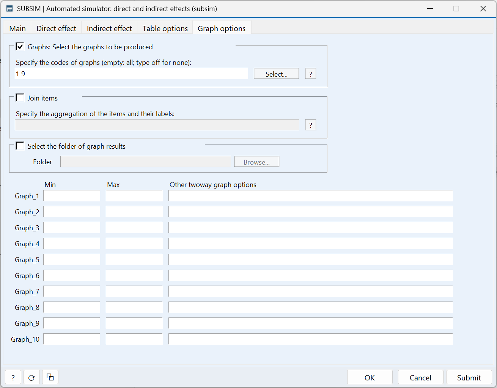
pciom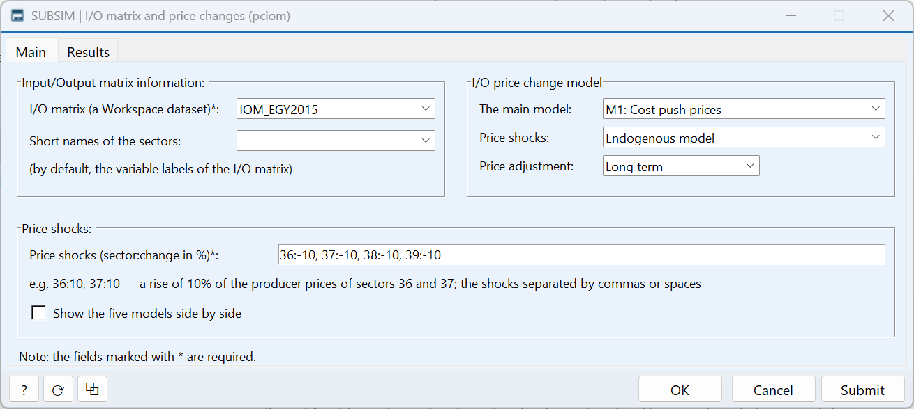
The Main tab of pciom has the
input-output table — a dataset of the Workspace — and, optionally, the
variable that names its sectors (by default, the variable labels of the
table); the price model, as in the Indirect effect tab of
subsim; and the shocks, sector:change
separated by commas or spaces, with Show the five models side by
side (allmodels). The Results tab
draws the graph of §5.5: the number of sectors shown, and the files
where the graph is saved (.aurg) or exported (a picture).
The price change of every sector is always listed in the Results
window.
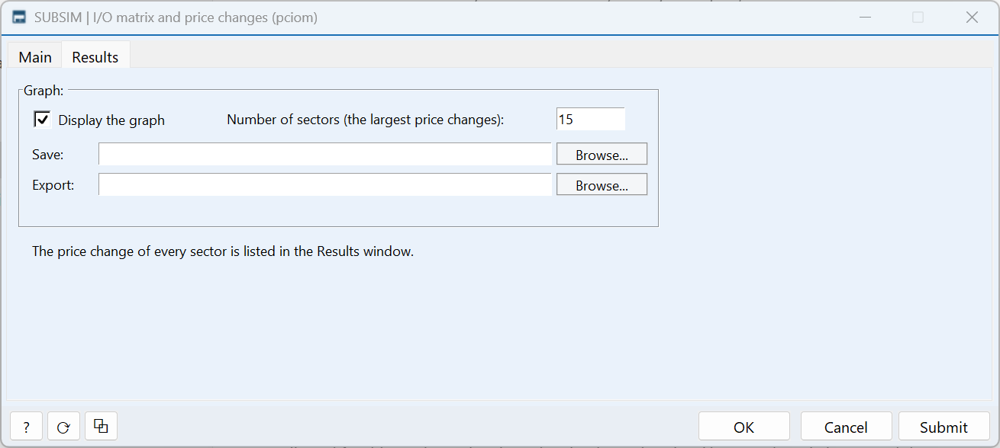
The examples of help subsim are numbered; each runs on
the example data, from the help window (in the command window or in the
box). This chapter comments on some of them. The price schedules of the
example data are declared first (they are in the
##exampledata of the help page):
. use "data/subsim_example.dta", clear
. pschset iflour , nblock(2) bun(2) mxb1(36) sub1(.94) tr1(.09) sub2(0) tr2(1.03)
. pschset f1_flour , nblock(2) bun(2) mxb1(36) sub1(0) tr1(.372) sub2(0) tr2(1.03)
. pschset f2_flour , nblock(1) bun(1) sub1(0) tr1(1.03)
… (the same for flour for bread and semolina)Example 1 of the help page, and Chapter 2: the price of sugar from 0.25 to 0.5704, a cut of 30% of its subsidy of 1.068. The loss per person is −23.87 on average, 1.32% of expenditure in the poorest quintile against 1.00% in the richest; the subsidy bill falls by 75%; the poverty headcount rises by 0.37 points.
Flour is sold by a quota of 36 kg per person and per year at 0.09,
with a subsidy of 0.94 — so that a kilogram costs 1.03 to produce — and
at the market price of 1.03 beyond (the schedule iflour).
The reform cuts the subsidy of the quota block by 30%: its price becomes
\(0.09 + 0.3 imes 0.94 = 0.372\)
(f1_flour):
. pschdes iflour f1_flour
Price schedule: iflour
────────┬───────────────────────────────────
Number │ Block Tariff Subsidy
────────┼───────────────────────────────────
1 │ 0 - 36 0.090000 0.940000
2 │ 36 and more 1.030000 0.000000
────────┴───────────────────────────────────
Tariff structure: Increasing block tariff (IBT)
Blocks counted per individual; subscription fee: 0
Price schedule: f1_flour
1 │ 0 - 36 0.372000 0.000000
2 │ 36 and more 1.030000 0.000000
. subsim pc_exp_tot, hsize(hhsize) pline(pline) ///
item1(Flour, var(pc_exp_flour) unit(kg) initial(iflour) final(f1_flour) elasticity(-.5)) ///
tjobs(1A 24 42 44 46) gjobs(off)Table 1A names the schedules (pschdes describes them). A
household that buys more than its quota loses \(36 \times (0.372 - 0.09) = 10.15\) per
person; one that buys less loses its quantity times \(0.282\). The households buy 16.7 million
kilograms; with an elasticity of −0.5 applied to the change of the
average price they pay, they buy 6.3 million less (tables 2.4 and 4.4).
The units given up come off the top blocks first: a household above its
quota first gives up units at the market price, which carry no subsidy,
and keeps its quota units, whose subsidy falls from 0.94 to \(0.09 + 0.94 - 0.372 = 0.658\). The bill
falls by 5.8 million (table 4.6).
Example 3: flour, flour for bread and semolina, given by the table at
the top of the data, with two scenarios — a cut of 30% of the subsidies
(fpsch1) and their removal (fpsch2):
. subsim pc_exp_tot, hsize(hhsize) pline(pline) itnames(itnames) snames(snames) ipsch(ipsch) ///
unit(unit) fpsch1(fpsch1) elas1(elas1) fpsch2(fpsch2) elas2(elas2) nitems(3) ///
scenarios("-30% of subsidy" "No subsidy") tjobs(1A 42 46) summary gjobs(off)Table 1A: The prices of the items, direct effect
─────────────┬─────────────────────────┬───────────────────────────────────────┬───────────────────────────────────────
│ │ Scenario 1 (-30% of subsidy) │ Scenario 2 (No subsidy)
Items │ Initial price Subsidy │ Final price Change (%) Elasticity │ Final price Change (%) Elasticity
─────────────┼─────────────────────────┼───────────────────────────────────────┼───────────────────────────────────────
Flour │ iflour — │ f1_flour — -0.50 │ 1.0300 — -0.50
Flour-bread │ 0.0370 0.9220 │ 0.3136 747.57 -0.50 │ 0.9590 2491.89 -0.50
Semolina │ isemolina — │ f1_semolina — -0.50 │ 0.9110 — -0.50
─────────────┴─────────────────────────┴───────────────────────────────────────┴───────────────────────────────────────| −30% of subsidy | No subsidy | |
|---|---|---|
| Impact on well-being per person | −23.92 | −79.72 |
| Revenue gain (millions) | 45.42 | 51.70 |
| Poverty headcount (%), from 11.50 | 12.23 | 14.45 |
| Compensating transfer per person | 16.87 | 62.98 |
| Net gain of the budget (millions) | 34.48 | 10.86 |
Removing the subsidies saves 51.7 million, the whole bill, but raises the poverty headcount by almost 3 points; the transfer that offsets it costs 40.8 million, four fifths of the saving. Flour for bread brings the same revenue in both scenarios (37.7 million): its price rises eightfold even in the first, and with an elasticity of −0.5 its quantity falls to zero in both — a sign that the elasticity is too large for such a price change (§4.5).
Example 4: the compensating transfer paid to each household spending less than 1,500 per person, a group marked by an indicator:
. generate targ = pc_exp_tot < 1500
. subsim pc_exp_tot, hsize(hhsize) pline(pline) itnames(itnames) snames(snames) ipsch(ipsch) ///
unit(unit) fpsch1(fpsch1) elas1(elas1) nitems(3) tjobs(off) gjobs(off) summary typetr(2) gtarg(targ)| Universal, per person | Targeted, per household | |
|---|---|---|
| Transfer per beneficiary | 16.87 (per person) | 150.37 (per household) |
| Transfer per person of the population | 16.87 | 5.83 |
| Cost (millions) | 10.94 | 3.78 |
| Net gain of the budget (millions) | 34.48 | 41.64 |
Targeting the group cuts the cost of the compensation by two thirds: the transfer goes to fewer people, closer to the poverty line.
Examples 6 and 7: the same reform measured by the compensating
variation with CES preferences (meas(4) model(2) subs(.5))
and by Taylor’s second order of the consumer surplus
(meas(2)). The table of §4.7 compares the measures: with
price rises of several hundred per cent, the first order (−23.92) is
about three times the exact variations (−8.06 and −8.10 with
Cobb-Douglas preferences).
Examples 11 to 14 use Egypt’s data: the household survey and the input-output table, both in the Workspace. Chapter 5 shows a reform that raises the price of electricity and gas by 20% for the households (the direct effect, an item with a subsidy of 0.3) and the producer prices of petroleum and gas by 20% (the indirect effect, through 39 consumption aggregates):
Main results : Scenario 1
───────────────────────────────┬───────────────────────────────────────────────────────────────────────
Component │ Pre-reform Direct effect Indirect effect Post-reform Change
───────────────────────────────┼───────────────────────────────────────────────────────────────────────
Well-being │
Welfare (per capita) │ 14035.061 13930.988 14006.814 13902.741 -132.320
Poverty headcount (%) │ 16.473 17.216 16.681 17.424 0.950
Poverty gap (%) │ 3.048 3.186 3.073 3.212 0.164
Inequality, Gini (%) │ 31.772 31.832 31.771 31.831 0.059
───────────────────────────────┼───────────────────────────────────────────────────────────────────────
Budget │
Subsidies (in millions) │ 1.174 0.391 1.174 0.391 -0.783
Transfers (in millions) (*) │ 0.000 0.560 0.097 0.661 0.661
Total budget (in millions) │ 1.174 0.951 1.271 1.053 -0.121
───────────────────────────────┼───────────────────────────────────────────────────────────────────────
Per capita │
Subsidy (per capita) │ 156.110 52.037 156.110 52.037 -104.073
Transfer (per capita) │ 0.000 74.425 12.920 87.920 87.920
Transfer (per beneficiary) │ 0.000 74.425 12.920 87.920 87.920
───────────────────────────────┴───────────────────────────────────────────────────────────────────────The indirect effect adds more than a quarter to the loss of the
direct effect (−28.25 against −104.07 per person), and 0.21 points to
the rise of poverty. The subsidies change only with the direct effect:
the consumption aggregates carry no subsidy. Example 12 computes the
indirect effect alone (no item, allind), the long term with
endogenous shocks; example 14 two scenarios, each with its shocks.
SUBSIM for AURA follows the model of SUBSIM 3.0 and reads its syntax:
the do-files of pschset run as they are, and the options of
asubsim keep their names (hsize(),
pline(), wappr(), appr(),
gvimp, tjobs(), taggr(),
gjobs(), opgr#() …). On SUBSIM’s examples,
AURA gives the tables of SUBSIM in Stata. For a subset of results, AURA
reports more precise estimates — mainly the quantities and the revenue
under block tariffs, the welfare change with subscription fees and the
compensating transfer — so that these figures can differ; the list below
says where.
Commands and boxes.
subsim, and one box compute the direct
effects, the indirect effects or both (in Stata, asubsim
and asubsim_ind). The input-output table is a dataset of
the Workspace, not a file path..sub file — the schedules and
the command — in place of the .prj and .pri
files of the boxes.nitems() says how many rows to read. Scenarios are
unlimited too.nblock() saying how many.The rules behind the results.
| Result | AURA’s rule |
|---|---|
| Change of quantity | \(\varepsilon\, q^0\, d\bar p\), with \(d\bar p\) the change of the average price paid for the initial quantity, fees included: households respond to the average price of what they buy (§4.4) |
| Government revenue | the exact fall of the subsidy bill, \(S^0 - S^1\), the final quantities consumed from the first block up (§4.6) |
| Subscription fees | part of the cost of the quantity, of the change of well-being and of the average price |
| Cobb-Douglas approach | it measures the change of well-being; the quantities follow the elasticity given |
| Mixed initial schedule | the limit between the IBT and VDT blocks read on the initial schedule |
| Several items, Cobb-Douglas | the post-reform rows of tables 4.7-4.9 combine the price changes of all the items, as the total of table 4.1 |
| Subsidy per capita after the reform (main results) | the subsidy before less the revenue gain per capita |
| Compensating transfer | computed exactly from the households’ gaps to the poverty line; 0
when poverty does not rise; missing when no transfer to the group can
bring poverty back; per adult equivalent with aehs(); a
missing indicator of the group counts as 0 |
| Graphs 1 and 2 | from the smallest expenditure of the data |
| Graphs 8 to 10 | from min() to max(), by default from 0 to
twice the compensating transfer |
Input-output, short term with nadp(k) |
\(k\) rounds of adjustment |
| Input-output, endogenous long term | \((I - A')^{-1} s\) |
When all the units of a household change price alike — a linear price, a VDT schedule — the quantities and the revenue are the same under both sets of rules: to compare a study made with SUBSIM in Stata, the tables of a linear item are the natural place to start.
Araar, A. and P. Verme (2012). Reforming subsidies: a toolkit for policy simulations. World Bank Policy Research Working Paper 6148.
Araar, A. and P. Verme (2016). Prices and welfare. World Bank Policy Research Working Paper 7566.
Coady, D., M. El-Said, R. Gillingham, K. Kpodar, P. Medas and D. Newhouse (2006). The magnitude and distribution of fuel subsidies: evidence from Bolivia, Ghana, Jordan, Mali, and Sri Lanka. IMF Working Paper 06/247.
Foster, J., J. Greer and E. Thorbecke (1984). A class of decomposable poverty measures. Econometrica 52(3), 761-766.
Ito, K. (2014). Do consumers respond to marginal or average price? Evidence from nonlinear electricity pricing. American Economic Review 104(2), 537-563.
Miller, R. E. and P. D. Blair (2009). Input-output analysis: foundations and extensions, 2nd edition. Cambridge University Press.